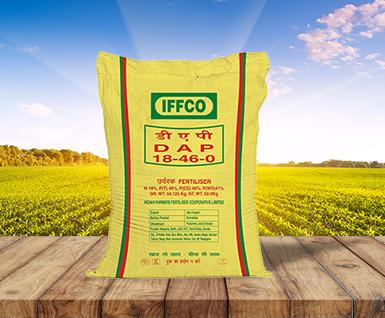

Description:
Di-Ammonium Phosphate (DAP) is a widely used fertilizer in sugarcane cultivation. It contains high levels of phosphorus, which promotes root development, early plant establishment, and enhances sugar content in sugarcane.
- Content:
1. Nitrogen (N): 18%
2. Phosphorus (P): 46%
3. Potassium (K): 0%
- Points:
- High phosphorus content stimulates root growth and early plant vigor.
- Suitable for application at planting to promote strong root establishment.
- Provides essential nutrients for initial growth stages of sugarcane.